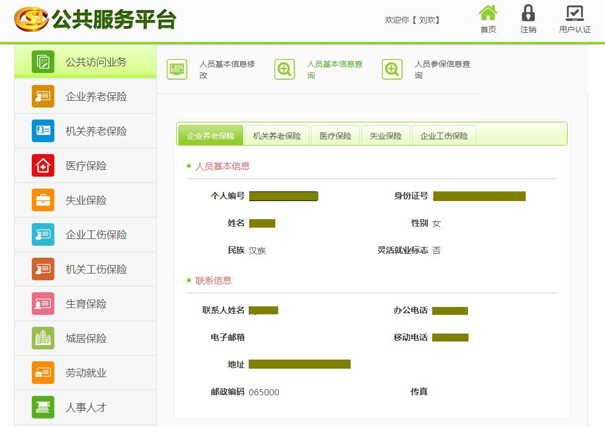
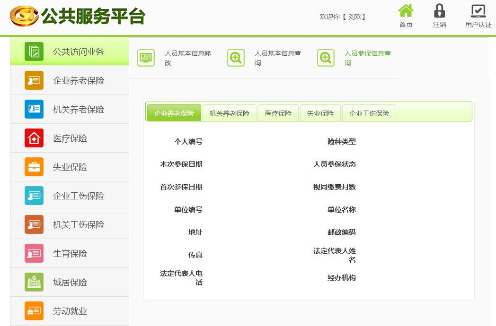

河北省人社公共服务平台操作手册
我的信息介绍:
1) 人员基本信息查询
通过个人账号登录系统之后点击左侧列表我的信息，再点击右侧人员基本信息会出现当前登录用户相关业务的个人基本信息，点击tab按钮切换可以查看不同险种的个人基本信息。

2) 人员参保信息查询
通过个人账号登录系统之后点击左侧列表我的信息，再点击右侧人员参保信息会出现当前登录用户相关业务的个人参保信息，点击tab按钮切换可以查看个人所参与的保险信息。
